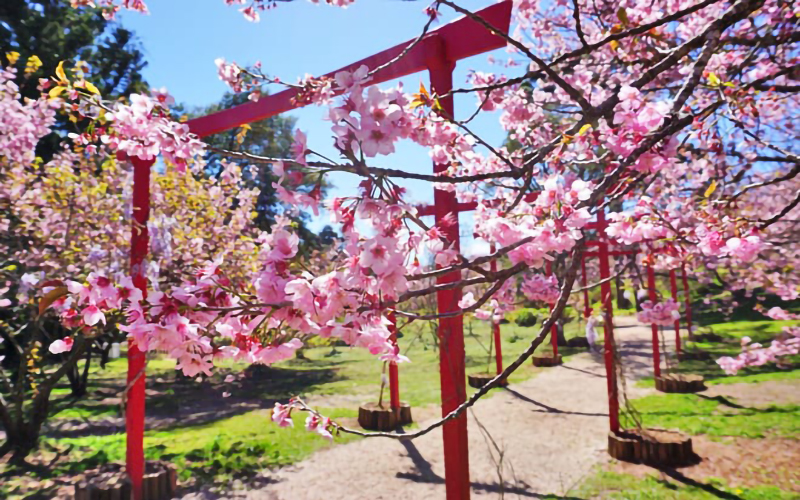

Como se não fosse o suficiente o clima frio e agradável da cidade, que encantam aqueles que amam o inverno, e a aculinária de literalmente dar água na boca. Campos do Jordão conta diversos Eventos não só para os residentes mas para aqueles que decidem dar uma visitar na cidade.
1.Festival de Inverno

Para quem gosta de curtir um friozinho na serra não há nada melhor do que visitar Campos do Jordão no inverno. A cidade realiza o Festival de Inverno durante todo o mês de julho. Essa é uma ótima opção para os amantes da música: o evento reúne mais de 80 concertos de quartetos musicais e orquestras sinfônicas do Brasil e do mundo. O festival tem apresentações gratuitas nas igrejas e na Praça de Capivari; os concertos pagos, no Auditório Cláudio Santoro.
2.Festival da Cerejeira
Para quem gosta de apreciar as cores e belezas da natureza, Campos do Jordão é o lugar certo! Nos finais de semana de julho e agosto, a cidade sedia a Festa da Cerejeira. A paisagem da cidade fica encantadora com as árvores floridas. O evento é realizado por descendentes de japoneses que residem na cidade, que buscam manter as tradições. A festa reúne pessoas de todas as idades que podem admirar a beleza e saborear a gastronomia típica japonesa.
3.Festival da Cerveja
Quem gosta de degustar cervejas diferenciadas não precisa sair do Brasil. É só viajar até Campos do Jordão! Em outubro, a cidade sedia a BeerFest — Festival da Cerveja Artesanal, realizado na Praça de Capivari.
O evento reúne música de qualidade — como MPB, rock e blues — e ainda oferece opções gastronômicas de alta qualidade, que podem ser harmonizadas com as cervejas da festa. E quem se interessa em saber um pouco mais sobre o assunto também pode participar dos workshops realizados durante a programação.
Enfim, a cidade é repleta de atrações durante o ano inteiro. É só escolher a que melhor se encaixa no seu perfil e aproveitar esse lugar acolhedor.